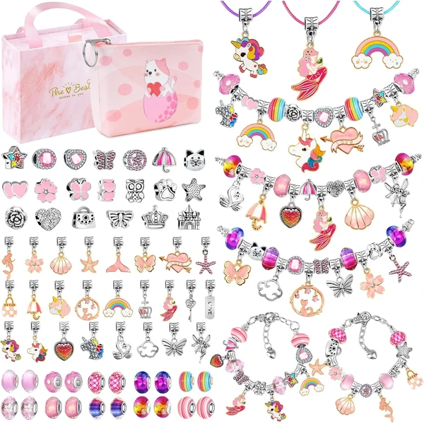

👶 10 años
WEVOL Kit de Pulseras y Abalorios
Un set con 74 accesorios variados para crear pulseras y collares personalizados, incluyendo cuentas de cristal, colgantes de aleación con temas como unicornios y sirenas, y cordones ajustables. Una forma simple de montar piezas únicas sin herramientas especiales.
⭐
¿Por qué nos gusta?
- ✔74 accesorios para múltiples combinaciones.
- ✔Cordones ajustables para cualquier tamaño.
- ✔Montaje sencillo, sin herramientas necesarias.
💬
Lo que más destacan las familias
Los padres suelen mencionar lo entretenido que resulta cambiar las combinaciones de cuentas y colgantes, con libertad para crear diseños diferentes. Es una buena actividad tanto en casa como en fiestas de cumpleaños.